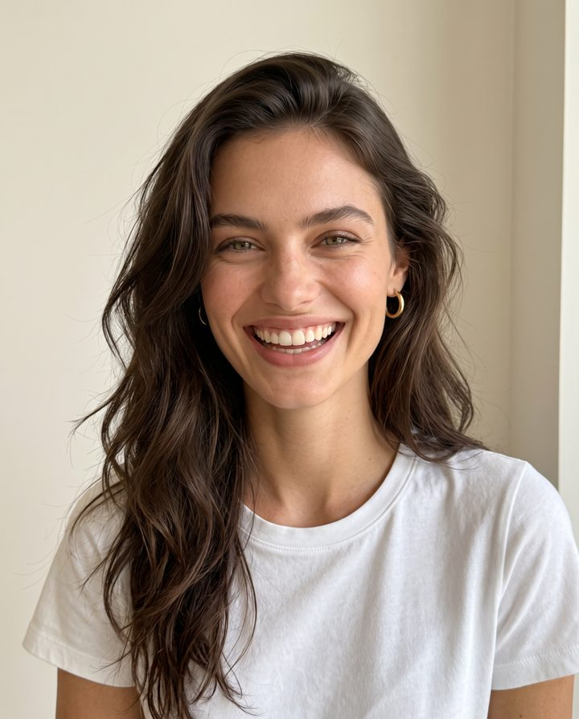

Casting Claudia
0
Finalistas
Conectando…
Ronda anterior
Por si quieres recuperar alguna

Comparar finalistas
Foto anterior
Foto siguiente
Nota sobre esta chica
Enviar
Cambiar de perfil
Mismos textos y mismas escenas: solo cambia la cara.